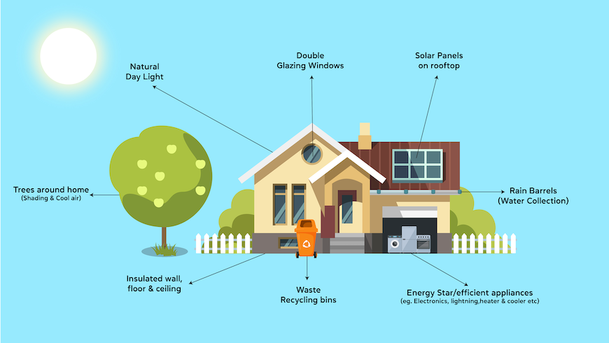
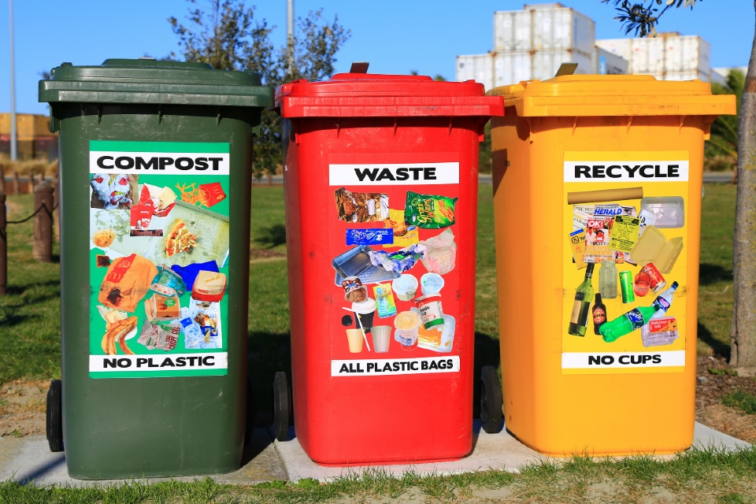
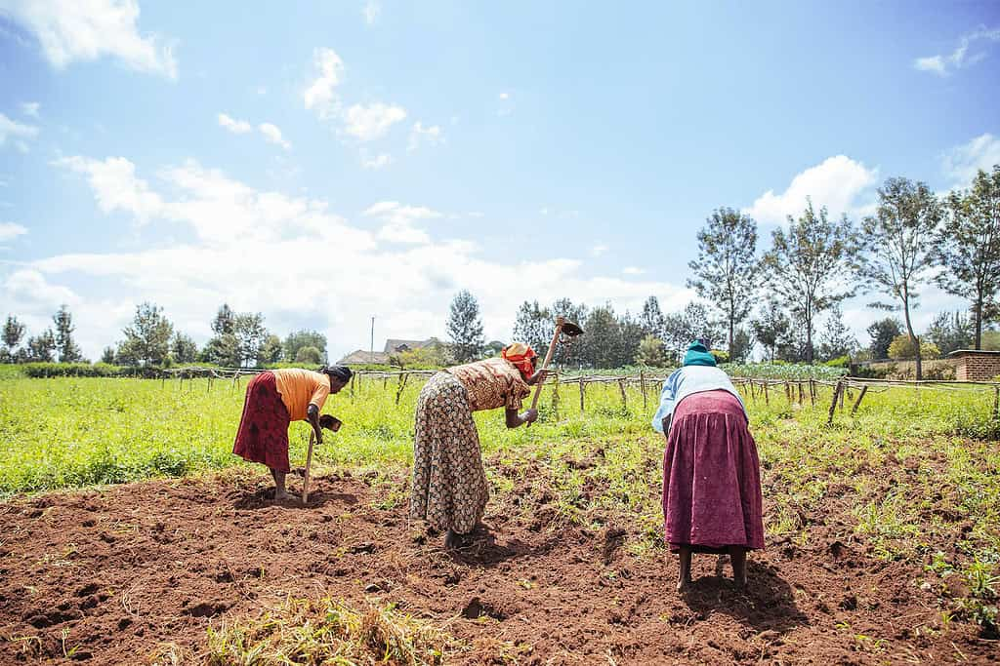
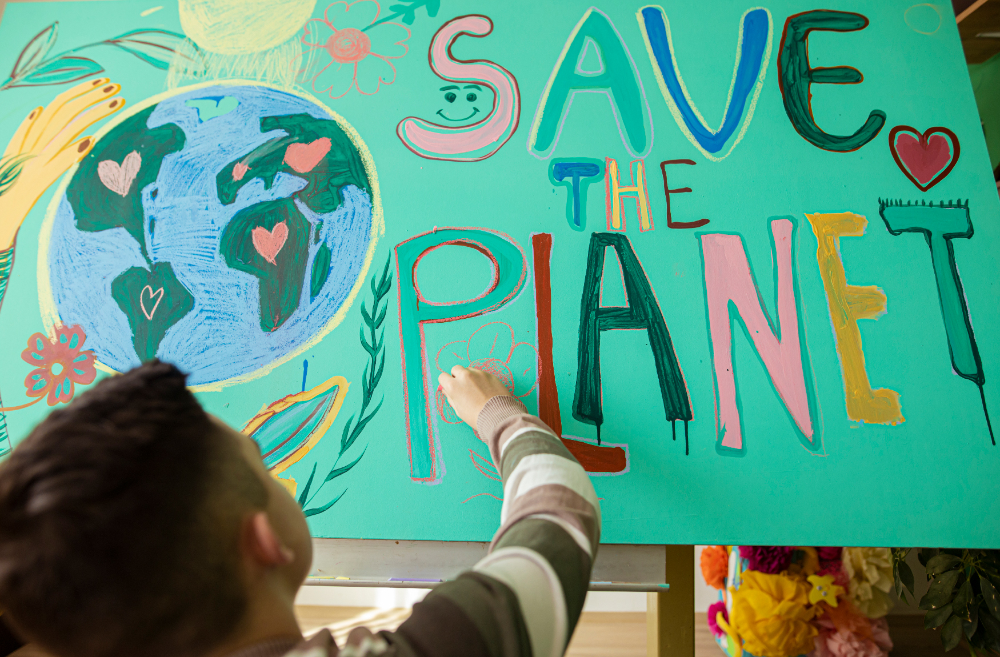

<!-- saved from url=(0032)http://127.0.0.1:8000/prevention -->


  
  <meta name="viewport" content="width=device-width, initial-scale=1.0">
  <title>BSIT3B | GROUP2</title>

  <!-- Tailwind CSS -->
  <link href="./prevention_files/tailwind.min.css" rel="stylesheet">

  <!-- Google Fonts -->
  <link href="./prevention_files/css2" rel="stylesheet">

  <!-- AOS Animation Library -->
  <link href="./prevention_files/aos.css" rel="stylesheet">
  <script src="./prevention_files/aos.js.download"></script>

  <style>
    html { scroll-behavior: smooth; }
    body { 
      font-family: 'Poppins', sans-serif;
      color: #f0fdf4;
      background-color: #0f172a;
      overflow-x: hidden;
    }

    h1, h2, h3, h4 {
      font-family: 'Playfair Display', serif;
      letter-spacing: 0.5px;
    }

    /* Dropdown animation */
    .dropdown-hidden { 
      max-height: 0; 
      opacity: 0; 
      transform: translateY(-10px);
      overflow: hidden; 
      transition: max-height 0.3s ease, opacity 0.3s ease, transform 0.3s ease; 
    }
    .dropdown-visible { 
      max-height: 500px; 
      opacity: 1; 
      transform: translateY(0);
      transition: max-height 0.3s ease, opacity 0.3s ease, transform 0.3s ease; 
    }

    /* Nav link underline */
    .nav-link { 
      position: relative; 
      padding-bottom: 2px; 
      transition: color 0.2s; 
      letter-spacing: 0.3px;
    }
    .nav-link::after { 
      content: ''; 
      position: absolute; 
      left: 0; 
      bottom: 0; 
      width: 0%; 
      height: 2px; 
      background-color: #979e9aff; 
      transition: width 0.3s ease; 
    }
    .nav-link:hover::after { width: 100%; }

    /* Rotate arrow */
    .rotate-0 { transform: rotate(0deg); transition: transform 0.3s ease; }
    .rotate-180 { transform: rotate(180deg); transition: transform 0.3s ease; }

    /* Footer links hover */
    .footer-link { position: relative; padding-bottom: 2px; transition: color 0.2s; }
    .footer-link::after { content: ''; position: absolute; left: 0; bottom: 0; width: 0%; height: 2px; background-color: #22c55e; transition: width 0.3s ease; }
    .footer-link:hover::after { width: 100%; }
  </style>


  <!-- Navbar -->
  <header class="bg-gray-900 shadow-md">
    <div class="container mx-auto flex justify-between items-center py-4 px-6 relative">
      <h1 class="text-2xl font-bold text-green-400"></h1>
      <nav class="relative">
        <ul class="flex space-x-6 text-lg text-gray-300 items-center">
          <li><a href="http://127.0.0.1:8000/" class="nav-link">Home</a></li>

          <!-- Facts Dropdown -->
          <li class="relative">
            <button id="factsBtn" class="nav-link flex items-center focus:outline-none">
              Facts
              <svg id="factsArrow" class="ml-1 w-4 h-4 fill-current rotate-0 transition-transform" viewBox="0 0 20 20">
                <path d="M5.25 7.5l4.5 4.5 4.5-4.5H5.25z"></path>
              </svg>
            </button>
            <ul id="factsDropdown" class="absolute left-0 mt-2 w-44 bg-gray-900 rounded-md shadow-lg dropdown-hidden z-50">
              <li><a href="http://127.0.0.1:8000/effects" class="block px-4 py-2 text-gray-300 nav-link">Effects</a></li>
              <li><a href="http://127.0.0.1:8000/causes" class="block px-4 py-2 text-gray-300 nav-link">Causes</a></li>
              <li><a href="http://127.0.0.1:8000/prevention" class="block px-4 py-2 text-gray-300 nav-link">Prevention</a></li>
            </ul>
          </li>

          <!-- More Dropdown -->
          <li class="relative">
            <button id="moreBtn" class="nav-link flex items-center focus:outline-none">
              More
              <svg id="moreArrow" class="ml-1 w-4 h-4 fill-current rotate-0 transition-transform" viewBox="0 0 20 20">
                <path d="M5.25 7.5l4.5 4.5 4.5-4.5H5.25z"></path>
              </svg>
            </button>
            <ul id="moreDropdown" class="absolute left-0 mt-2 w-44 bg-gray-900 rounded-md shadow-lg dropdown-hidden z-50">
              <li><a href="http://127.0.0.1:8000/about" class="block px-4 py-2 text-gray-300 nav-link">About Us</a></li>
              <li><a href="http://127.0.0.1:8000/game" class="block px-4 py-2 text-gray-300 nav-link">Game</a></li>
            </ul>
          </li>
        </ul>
      </nav>
    </div>
  </header>

  <!-- Home Hero Section -->
  
  <!-- 🔧 FIXED MAIN: full-width support -->
  <main class="min-h-screen">
    
<!-- HERO SECTION -->
<section id="prevention" class="relative h-screen w-full bg-cover bg-center" style="background-image: url(&#39;https://www.givemetrees.org/ckfinder/userfiles/files/Plant%20Trees-min.png&#39;)">

    <div class="absolute inset-0 bg-black bg-opacity-40 flex flex-col items-center justify-center text-center px-4">
        <h1 class="text-5xl md:text-6xl text-white font-bold mb-6 aos-init aos-animate" data-aos="fade-down">
            How to Prevent Climate Change
        </h1>
        <p class="text-lg md:text-xl text-gray-300 max-w-3xl aos-init aos-animate" data-aos="fade-up">
            Preventing climate change requires collective action — reducing emissions, conserving energy,
            restoring nature, and transforming how societies produce and consume. Every choice matters.
        </p>
    </div>
</section>

<!-- MAIN SECTION -->
<section class="py-20 bg-transparent">
    <div class="max-w-7xl mx-auto px-6 space-y-24">

        <!-- 1. Transition to Renewable Energy (IMAGE LEFT) -->
        <div class="grid md:grid-cols-2 gap-10 items-center">

            

            <div data-aos="fade-left" class="aos-init">
                <h2 class="text-3xl font-bold text-white mb-4">Transition to Renewable Energy</h2>

                <p class="text-gray-300 leading-relaxed text-lg mb-4">
                    Switching from fossil fuels to renewable energy sources such as solar, wind, and hydro power
                    significantly reduces greenhouse gas emissions. These clean technologies produce electricity
                    without releasing carbon into the atmosphere.
                </p>
                <p class="text-gray-300 leading-relaxed text-lg">
                    As renewables become more affordable and accessible, both households and industries can adopt
                    cleaner energy solutions. Building a global renewable energy infrastructure is essential to
                    achieving long-term climate stability.
                </p>
            </div>
        </div>

        <!-- 2. Improve Energy Efficiency (IMAGE RIGHT) -->
        <div class="grid md:grid-cols-2 gap-10 items-center">

            <div class="order-2 md:order-1 aos-init" data-aos="fade-right">
                <h2 class="text-3xl font-bold text-white mb-4">Improve Energy Efficiency</h2>

                <p class="text-gray-300 leading-relaxed text-lg mb-4">
                    Reducing wasted energy in buildings, appliances, transportation, and manufacturing greatly lowers
                    emissions. Efficient technologies such as LED lighting, insulated homes, and electric vehicles
                    help decrease the overall demand for energy.
                </p>
                <p class="text-gray-300 leading-relaxed text-lg">
                    Governments and communities can promote efficiency by adopting modern standards and encouraging
                    sustainable consumer choices. Small improvements across millions of households create massive
                    environmental benefits.
                </p>
            </div>

            
        </div>

        <!-- 3. Restore Forests & Plant Trees (IMAGE LEFT) -->
        <div class="grid md:grid-cols-2 gap-10 items-center">

            

            <div data-aos="fade-left" class="aos-init">
                <h2 class="text-3xl font-bold text-white mb-4">Restore Forests &amp; Plant Trees</h2>

                <p class="text-gray-300 leading-relaxed text-lg mb-4">
                    Forests absorb carbon dioxide and help regulate the global climate. By reforesting damaged
                    areas and protecting existing forests, we strengthen Earth’s natural ability to store carbon.
                </p>
                <p class="text-gray-300 leading-relaxed text-lg">
                    Local tree-planting movements and national conservation programs both play a vital role in
                    restoring biodiversity, improving air quality, and building climate resilience.
                </p>
            </div>
        </div>

        <!-- 4. Promote Sustainable Transportation (IMAGE RIGHT) -->
        <div class="grid md:grid-cols-2 gap-10 items-center">

            <div class="order-2 md:order-1 aos-init" data-aos="fade-right">
                <h2 class="text-3xl font-bold text-white mb-4">Promote Sustainable Transportation</h2>

                <p class="text-gray-300 leading-relaxed text-lg mb-4">
                    Transportation is one of the largest contributors to carbon emissions. Expanding public transit,
                    encouraging biking and walking, and adopting electric vehicles reduce pollution and improve air
                    quality in urban areas.
                </p>
                <p class="text-gray-300 leading-relaxed text-lg">
                    Cities that invest in sustainable mobility benefit from healthier communities, decreased traffic
                    congestion, and reduced reliance on fossil fuels long-term.
                </p>
            </div>

            
        </div>

        <!-- 5. Reduce Waste & Support Recycling (IMAGE LEFT) -->
        <div class="grid md:grid-cols-2 gap-10 items-center">

            

            <div data-aos="fade-left" class="aos-init">
                <h2 class="text-3xl font-bold text-white mb-4">Reduce Waste &amp; Support Recycling</h2>

                <p class="text-gray-300 leading-relaxed text-lg mb-4">
                    Minimizing waste helps lower emissions from landfills and reduces the demand for energy-intensive
                    manufacturing. Recycling materials such as plastic, metal, and paper conserves natural resources
                    and prevents pollution.
                </p>
                <p class="text-gray-300 leading-relaxed text-lg">
                    Choosing reusable items, reducing single-use plastics, and supporting zero-waste initiatives
                    strengthens the global shift toward sustainable living.
                </p>
            </div>
        </div>

        <!-- 6. Support Sustainable Agriculture (IMAGE RIGHT) -->
        <div class="grid md:grid-cols-2 gap-10 items-center">

            <div class="order-2 md:order-1 aos-init" data-aos="fade-right">
                <h2 class="text-3xl font-bold text-white mb-4">Support Sustainable Agriculture</h2>

                <p class="text-gray-300 leading-relaxed text-lg mb-4">
                    Sustainable farming reduces methane emissions, conserves water, and protects soil health.
                    Practices such as crop rotation, organic farming, and reducing livestock emissions all contribute
                    to a healthier planet.
                </p>
                <p class="text-gray-300 leading-relaxed text-lg">
                    Consumers can help by buying responsibly sourced products, supporting local farmers, and reducing
                    food waste — one of the easiest and most impactful climate actions.
                </p>
            </div>

            
        </div>

        <!-- 7. Climate Education & Community Action (IMAGE LEFT) -->
        <div class="grid md:grid-cols-2 gap-10 items-center">

            

            <div data-aos="fade-left" class="aos-init">
                <h2 class="text-3xl font-bold text-white mb-4">Climate Education &amp; Community Action</h2>

                <p class="text-gray-300 leading-relaxed text-lg mb-4">
                    Spreading awareness empowers people to make informed choices that reduce environmental impact.
                    Communities that understand climate challenges are more likely to adopt sustainable habits and
                    support policies that protect the planet.
                </p>
                <p class="text-gray-300 leading-relaxed text-lg">
                    Local organizations, schools, and youth groups play an important role in inspiring real change.
                    When people work together, individual actions multiply into global impact.
                </p>
            </div>
        </div>

    </div>
</section>

  </main>

  
  <!-- Footer -->
  <footer class="bg-gray-950 text-center py-12 mt-12 text-gray-400">
    <p class="text-gray-400">© 2025 BSIT3B Group2 | Advocates Against Climate Change</p>
  </footer>

  <!-- Scripts -->
  <script>
    AOS.init({ duration: 1000, once: true });

    const dropdowns = [
      {btn: document.getElementById('factsBtn'), menu: document.getElementById('factsDropdown'), arrow: document.getElementById('factsArrow')},
      {btn: document.getElementById('moreBtn'), menu: document.getElementById('moreDropdown'), arrow: document.getElementById('moreArrow')}
    ];

    dropdowns.forEach(d => {
      d.btn.addEventListener('click', (e) => {
        e.stopPropagation();
        dropdowns.forEach(other => {
          if(other.menu !== d.menu) {
            other.menu.classList.remove('dropdown-visible');
            other.menu.classList.add('dropdown-hidden');
            other.arrow.classList.remove('rotate-180');
            other.arrow.classList.add('rotate-0');
          }
        });
        d.menu.classList.toggle('dropdown-visible');
        d.menu.classList.toggle('dropdown-hidden');
        d.arrow.classList.toggle('rotate-180');
        d.arrow.classList.toggle('rotate-0');
      });
    });

    window.addEventListener('click', () => {
      dropdowns.forEach(d => {
        d.menu.classList.remove('dropdown-visible');
        d.menu.classList.add('dropdown-hidden');
        d.arrow.classList.remove('rotate-180');
        d.arrow.classList.add('rotate-0');
      });
    });
  </script>


</body></html>